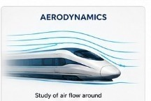
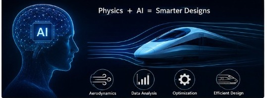
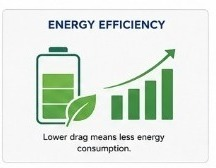

Physics Behind AeroAI
Understanding the aerodynamic principles and scientific concepts that enable Artificial Intelligence to theoretically optimize bullet train nose geometry for reduced drag and improved efficiency.
Scientific Concepts

Aerodynamics
Aerodynamics is the branch of physics that studies how air flows around moving objects. A streamlined bullet train allows smoother airflow, reducing air resistance and improving overall performance.

Drag Force
Drag force is the resistance offered by air against the motion of the train. As the speed increases, drag becomes one of the major forces affecting efficiency and energy consumption.

Drag Coefficient (Cd)
The drag coefficient represents how aerodynamic a design is. A lower Cd value indicates better airflow around the train and reduced aerodynamic resistance.

Streamlined Design
A streamlined nose helps air move smoothly around the train, reducing turbulence, pressure differences, aerodynamic noise, and energy loss during high-speed travel.
How AeroAI Uses Physics

Artificial intelligence + Physics
AeroAI combines Artificial Intelligence with aerodynamic principles to theoretically analyse different bullet train nose geometries. Instead of testing every design physically, the AI predicts the most efficient shape based on aerodynamic behaviour and operating speed.
Why Aerodynamics Matters

Energy Efficiency
Reducing aerodynamic drag lowers the energy required to move the train, making high-speed transportation more efficient and environmentally friendly.

Higher Performance
An optimized aerodynamic design allows trains to travel at higher speeds while maintaining stability, passenger comfort, and operational efficiency.
Sustainability
Lower energy consumption results in reduced environmental impact, supporting cleaner and more sustainable transportation systems.
Real-World Applications
Shinkansen
Japan's Shinkansen uses streamlined nose designs to reduce aerodynamic drag, tunnel boom, and energy consumption while maintaining safe high-speed operation.

CR400 Fuxing
China's CR400 Fuxing incorporates advanced aerodynamic engineering to achieve higher operating speeds with improved efficiency and passenger comfort.

Future Transportation
AI-assisted aerodynamic optimization has the potential to support the development of future bullet trains, Hyperloop systems, and other high-speed transportation technologies.
Key Takeaways
- High-speed trains experience significant aerodynamic drag.
- Streamlined nose designs reduce air resistance and turbulence.
- Lower drag improves speed, stability, and energy efficiency.
- Artificial Intelligence can theoretically analyse multiple designs faster than conventional trial-and-error approaches.
- AeroAI combines Physics and AI to predict efficient bullet train nose geometries for different operating speeds.
- The project promotes sustainable and intelligent transportation through aerodynamic optimization.
Physics Powers Innovation
By integrating aerodynamic principles with Artificial Intelligence, AeroAI demonstrates how scientific concepts can be applied to solve real-world engineering challenges and inspire the next generation of high-speed transportation.